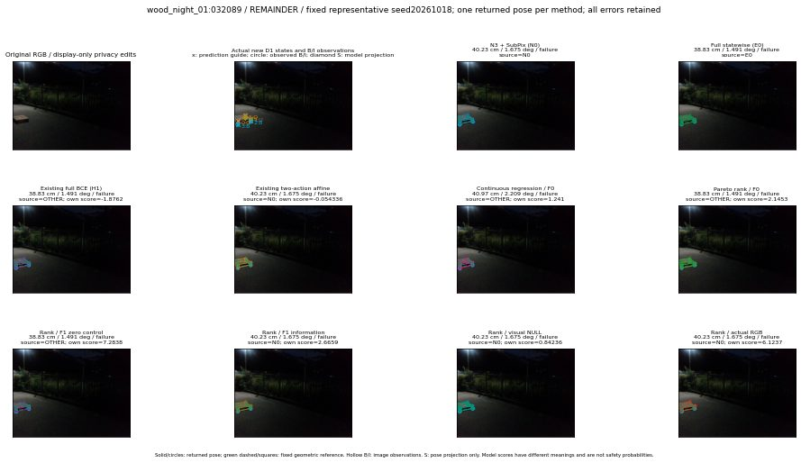

실선은 반환 자세, 초록 점선은 고정 기하 참조입니다. S는 영상 관측이 아닙니다. 점수는 모델별 의미가 다르며 보정된 안전 확률이 아닙니다. 개인정보 처리는 표시 사본에만 적용했습니다.
| 방법·seed | 위치 / 회전 / 공동성공 | 실제 출처 | 선택 후보 | 각 모델 자체 점수 |
|---|---|---|---|---|
| N0 | 40.23 cm / 1.675 deg / failure | N0 | N/A | N/A |
| E0 | 38.83 cm / 1.491 deg / failure | E0 | N/A | N/A |
| E0_REGENERATED | 38.83 cm / 1.491 deg / failure | E0 | E0_REGENERATED | N/A |
| POSEFIX_SUBPIX_PF_ANCHOR | 12.73 cm / 2.531 deg / failure | OTHER | N/A | N/A |
| POSEFIX_SUBPIX_YOLO_ANCHOR | 12.73 cm / 2.531 deg / failure | OTHER | N/A | N/A |
| D1_H1_MLP_s20261018 | 38.83 cm / 1.491 deg / failure | OTHER | G10/ORIGINAL_WD/endpoint/79 | -1.8762422800064087 |
| D1_H1_MLP_s20261019 | 38.83 cm / 1.491 deg / failure | OTHER | G10/ORIGINAL_WD/endpoint/79 | -1.9452354907989502 |
| D1_H1_MLP_s20261020 | 38.83 cm / 1.491 deg / failure | OTHER | G10/ORIGINAL_WD/endpoint/79 | -2.1249048709869385 |
| D1_H1_PAIR_MLP_s20261018 | 38.83 cm / 1.491 deg / failure | E0 | E0_REGENERATED | -0.49856364727020264 |
| D1_H1_PAIR_MLP_s20261019 | 38.83 cm / 1.491 deg / failure | E0 | E0_REGENERATED | -0.738543689250946 |
| D1_H1_PAIR_MLP_s20261020 | 38.83 cm / 1.491 deg / failure | E0 | E0_REGENERATED | -0.37955209612846375 |
| D1_H1_PAIR_ROLE_AFFINE_s20261018 | 40.23 cm / 1.675 deg / failure | N0 | N0 | -0.054336223751306534 |
| D1_H1_PAIR_ROLE_AFFINE_s20261019 | 40.23 cm / 1.675 deg / failure | N0 | N0 | -0.2690402567386627 |
| D1_H1_PAIR_ROLE_AFFINE_s20261020 | 40.23 cm / 1.675 deg / failure | N0 | N0 | -0.168603777885437 |
| R_CONT_F0_s20261018 | 40.97 cm / 2.209 deg / failure | OTHER | WD0/ORIGINAL_WD/sample/34 | 1.2410125732421875 |
| R_CONT_F0_s20261019 | 40.97 cm / 2.209 deg / failure | OTHER | WD0/ORIGINAL_WD/sample/34 | 1.3190162181854248 |
| R_CONT_F0_s20261020 | 40.97 cm / 2.209 deg / failure | OTHER | WD0/ORIGINAL_WD/sample/34 | 1.3203206062316895 |
| R_ORDER_F0_s20261018 | 38.83 cm / 1.491 deg / failure | OTHER | G10/ORIGINAL_WD/endpoint/81 | 2.1453421115875244 |
| R_ORDER_F0_s20261019 | 38.83 cm / 1.491 deg / failure | OTHER | G10/ORIGINAL_WD/endpoint/81 | -0.26663991808891296 |
| R_ORDER_F0_s20261020 | 38.83 cm / 1.491 deg / failure | OTHER | G10/ORIGINAL_WD/endpoint/81 | -1.0802637338638306 |
| R_ORDER_F1_ZERO_s20261018 | 38.83 cm / 1.491 deg / failure | OTHER | G10/ORIGINAL_WD/endpoint/81 | 7.283805847167969 |
| R_ORDER_F1_ZERO_s20261019 | 38.83 cm / 1.491 deg / failure | OTHER | G10/ORIGINAL_WD/endpoint/81 | -6.964147567749023 |
| R_ORDER_F1_ZERO_s20261020 | 40.23 cm / 1.675 deg / failure | N0 | N0 | 4.449228286743164 |
| R_ORDER_F1_s20261018 | 40.23 cm / 1.675 deg / failure | N0 | N0 | 2.6658835411071777 |
| R_ORDER_F1_s20261019 | 40.23 cm / 1.675 deg / failure | N0 | N0 | 3.978829860687256 |
| R_ORDER_F1_s20261020 | 40.23 cm / 1.675 deg / failure | N0 | N0 | 5.351468086242676 |
| V_ORDER_NULL_s20261018 | 40.23 cm / 1.675 deg / failure | N0 | N0 | 0.8423613905906677 |
| V_ORDER_NULL_s20261019 | 40.23 cm / 1.675 deg / failure | N0 | N0 | 1.066499948501587 |
| V_ORDER_NULL_s20261020 | 40.23 cm / 1.675 deg / failure | N0 | N0 | 4.3172502517700195 |
| V_ORDER_RGB_s20261018 | 40.23 cm / 1.675 deg / failure | N0 | N0 | 6.1237382888793945 |
| V_ORDER_RGB_s20261019 | 40.23 cm / 1.675 deg / failure | N0 | N0 | 0.5220178365707397 |
| V_ORDER_RGB_s20261020 | 40.23 cm / 1.675 deg / failure | N0 | N0 | -6.768191337585449 |